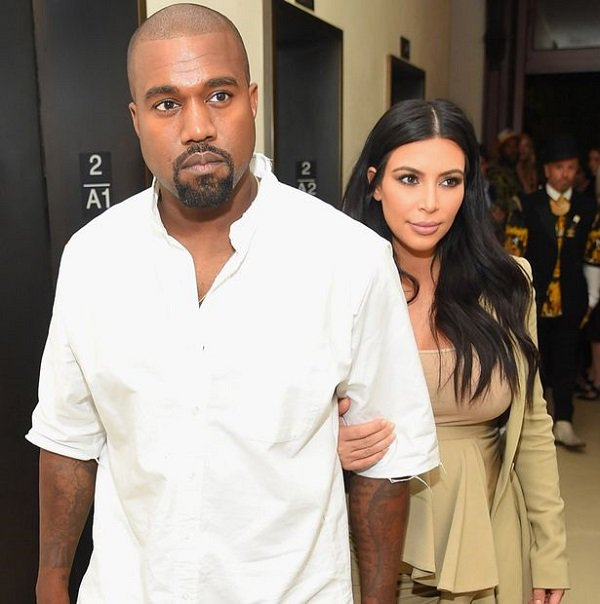
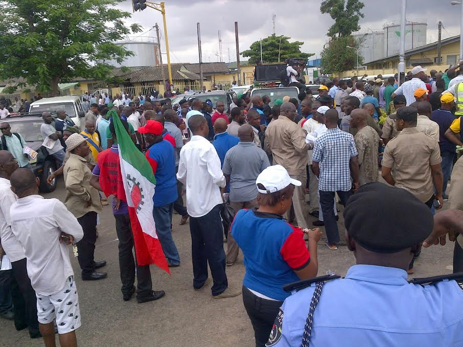

entertainmant news
Were we bring to you the latest news on entertainment and celebrity update
Previous governments were corrupt – Osinbajo
The Vice President, Prof. Yemi Osinbajo, on Saturday restated that the Federal Government had achieved a lot in all sectors of human development and democratic process. The News Agency of Nigeria (NAN) reports that Osinbajo spoke at the 2017/2018 Barewa Old Boys Association annual lecture in Sokoto. “There is a lot of impunity that have been defined to public office in Nigeria, especially grand corruption which had been sanctioned under the present administration. “I said grand corruption because our society had a problem of extended corruption affecting all government institutions and today has never been the case. “Nigeria had in the past faced so much challenges of corruption in public offices with a lot of government money being stolen by individuals which the present administration blocked such instances,” he said. Osinbajo added that the present administration under the leadership of President Muhammadu Buhari had recorded tremendous success in the areas of security, agriculture, judiciary, legislature, among others.
“There is not a single state in Nigeria that is not undergoing a measure of FG project under the ministry of power, works and Housing. “More so, clearly we have not done all we want to see, but if we are to ask our brothers and sisters from the North-East of what Boko-Haram seize 14 local government in their state, you will agree with me that they have seen some change.
Why Buhari’s tenure will be the lowest ebb of Nigeria’s political development – Guber candidate
 The gubernatorial candidate of the Providence Peoples Party (PPC) in Plateau State, Dr Haruna Dabin, says President Muhammadu Buhari’s four years as president of Nigeria will go down in history as the lowest ebb in the nation’s political development.
Dabin, a political scientist, was a founding member of the Peoples Democratic Party, former Director-General of People’s Democratic Institute; erstwhile member of National Economic Intelligence Committee and also a former PDP chairman in Plateau State. He however resigned his membership of the party few months ago, and joined the PPC.
Speaking in an exclusive interview with DAILY POST in Jos, the governorship candidate said, “The four years of President Buhari will go down in history as the lowest ebb of Nigeria’s political development.
“Democracy thrives in a peaceful atmosphere, but in the last three years, there is no part of this country that has been spared of bloodshed, anarchy and violence.
“United Nations Development Programme (UNDP) captured Nigeria as one of those countries in the world where those living in abject poverty are over 80 percent of the population and those who own the means of sustenance are fewer than five percent of Nigeria’s population.
The gubernatorial candidate of the Providence Peoples Party (PPC) in Plateau State, Dr Haruna Dabin, says President Muhammadu Buhari’s four years as president of Nigeria will go down in history as the lowest ebb in the nation’s political development.
Dabin, a political scientist, was a founding member of the Peoples Democratic Party, former Director-General of People’s Democratic Institute; erstwhile member of National Economic Intelligence Committee and also a former PDP chairman in Plateau State. He however resigned his membership of the party few months ago, and joined the PPC.
Speaking in an exclusive interview with DAILY POST in Jos, the governorship candidate said, “The four years of President Buhari will go down in history as the lowest ebb of Nigeria’s political development.
“Democracy thrives in a peaceful atmosphere, but in the last three years, there is no part of this country that has been spared of bloodshed, anarchy and violence.
“United Nations Development Programme (UNDP) captured Nigeria as one of those countries in the world where those living in abject poverty are over 80 percent of the population and those who own the means of sustenance are fewer than five percent of Nigeria’s population.
 Dabin said further, “Early 2016, I wrote a paper for an international conference that was held at Ahmadu Bello University about this change of guard and posited that with APC taking over as a ruling party, we are going to experience the worse form of dictatorship, because the framework upon which APC came to power was not one on which they were going to appeal to people, get consensus on national issues.
“They were a group of desperados and they wanted power at all costs. In that paper, I predicted that the collapse of APC would be grand, because all this push and shove, they are not a group that would appeal to reason. They don’t have any blueprint in terms of development of the country.
“So in between 2015 and 2018 before politics took centre stage, I thought they would have made progress, that the condition of people would have improved. If they accused Goodluck Jonathan of corruption, because the system he presided over allowed corruption.
“Unfortunately, certain dimensions of corruption have been over exalted under President Muhammadu Buhari; amongst them are nepoticism, sectionalism, push for religious politics.
“Any state that would exalt sectarian interest is doomed; it will degenerate into anarchy. It is a matter of time”, the gubernatorial candidate warned.
Dabin said further, “Early 2016, I wrote a paper for an international conference that was held at Ahmadu Bello University about this change of guard and posited that with APC taking over as a ruling party, we are going to experience the worse form of dictatorship, because the framework upon which APC came to power was not one on which they were going to appeal to people, get consensus on national issues.
“They were a group of desperados and they wanted power at all costs. In that paper, I predicted that the collapse of APC would be grand, because all this push and shove, they are not a group that would appeal to reason. They don’t have any blueprint in terms of development of the country.
“So in between 2015 and 2018 before politics took centre stage, I thought they would have made progress, that the condition of people would have improved. If they accused Goodluck Jonathan of corruption, because the system he presided over allowed corruption.
“Unfortunately, certain dimensions of corruption have been over exalted under President Muhammadu Buhari; amongst them are nepoticism, sectionalism, push for religious politics.
“Any state that would exalt sectarian interest is doomed; it will degenerate into anarchy. It is a matter of time”, the gubernatorial candidate warned.
Kanye West calls out Drake, Tyson, Nick Cannon over ‘negative’ comments on Kim Kardashian
Popular American rapper, Kanye West has called our Drake Nick Cannon and Tyson Beckford over an alleged negative statement made about his wife, Kim Kardashian. Kanye West in videos on his Instagram page warned the trio to stop saying negative things about Kim Kardashian henceforth. Speaking on his issues with Nick Cannon, he said:” I’m out of the sunken place, I can be Ye and express how I feel, there’s a couple of things that I want to address. First of all, I wanna address Nick Cannon. I understand that you used to date my wife, but [when] you get in an interview, don’t mention my wife. If someone brings up my wife, you say, ‘Ye, I respect that man. I’m not speaking on that.'”
.jpg) West addressing Drake said, “If I wasn’t in a medicated state, I would have had the wherewithal to say, ‘Hey Pusha, don’t diss Drake on my beat and I spoke about that and took accountability for that.
“The fact that people are making rumours that you fucked my wife and you not saying nothing and you carrying it like that, that doesn’t sit well with my spirit.”
He also stated how he believes Drake’s usage of “Kiki” from his single “In My Feelings” was directed at his wife.
“You know, if I had a girlfriend from Chicago and her name was Ranita and then you was married to Rihanna, I wouldn’t make no song called ‘Riri.’ So when you’re like, ‘Oh, I don’t know where it come from, you’re too smart for that, bro. You know where that come from. Don’t make no record with nothing that can be confused.”
Lastly, West switched his comments at model Tyson Beckford,saying “As far as Tyson Beckford goes, don’t speak on my wife, bro. None of you all should speak on my wife.
“Nick Cannon, Drake, Tyson Beckford all that negativity does not sit right with me, that’s why I had to address it like this.”
West addressing Drake said, “If I wasn’t in a medicated state, I would have had the wherewithal to say, ‘Hey Pusha, don’t diss Drake on my beat and I spoke about that and took accountability for that.
“The fact that people are making rumours that you fucked my wife and you not saying nothing and you carrying it like that, that doesn’t sit well with my spirit.”
He also stated how he believes Drake’s usage of “Kiki” from his single “In My Feelings” was directed at his wife.
“You know, if I had a girlfriend from Chicago and her name was Ranita and then you was married to Rihanna, I wouldn’t make no song called ‘Riri.’ So when you’re like, ‘Oh, I don’t know where it come from, you’re too smart for that, bro. You know where that come from. Don’t make no record with nothing that can be confused.”
Lastly, West switched his comments at model Tyson Beckford,saying “As far as Tyson Beckford goes, don’t speak on my wife, bro. None of you all should speak on my wife.
“Nick Cannon, Drake, Tyson Beckford all that negativity does not sit right with me, that’s why I had to address it like this.”
SWAEC: Fayose reacts to Buhari’s results attestation, tells Nigerians what to do
The Kogi State Chairman of the Nigeria Labour Congress, NLC, Comrade Onuh Edoka, says it is unfortunate that the state government is still not sure of its actual monthly wage bill, after over two years of a screening exercise that is still ongoing. Edoka, who spoke on Saturday, said, “the state government does not know what the state wage bill looks like and are not too sure of the activities of those preparing her wage bill, and now wants to use the table payment to ascertain the true figures. ” The Kogi state government is only using the table payment to investigate those preparing the salaries of workers, when it discovered that the wage bill couldn’t have gone up even after a tortuous screening exercise that brought hardship on the workers”. Edoka said it is a common knowledge that salaries are no longer prepared by accountants in ministries and parastatals, but rather by the accountant-general and auditor-general, who pay from a single source from government house in Lokoja. In his words, “It was clearly an argument of labour at the discussion table that the N2.8billion figures as monthly wage bill of government was on the high side after two years of screening that saw many people lose their jobs, with several others cleared and yet to be returned on the pay roll. ” While at the discussion table, labour engaged the government that what it inherited from the immediate past administration was N2.6billion as monthly wage bill. We expressed our reservations on why the wage bill would still be going up, yet with many workers no longer on the payroll. “Labour never made suggestions for table payment but rather it only challenged the bogus wage bill of the state which it felt unrealistic. ” When we met at the discussion table, the government through it financial management team said they will pay three and four months salaries to core ministries and tertiary institutions respectively. ” We now asked what was the total implication of the amount they want to pay from the money received by the government. They now said the total amount to be paid was N9.7billion, with the state monthly wage bill standing at N2.8billion. ” We now told them that the monthly figure was outrageous most especially that it inherited N2.6billion from past administration. We wondered why the wage bill is this high when several persons have lost job, and others are still not on the payroll since the screening began over two years ago.” The NLC chairman, however, urged those who are defrauding the state using the Kogi State wage bill, to have a rethink, warning that such practices was only joepadizing the future of Kogites and the people.
Kogi govt still doesn’t know state’s wage bill despite two years of screening workers – NLC
 The immediate past governor of Ekiti State, Ayodele Fayose has reacted to issuance of the attestation of school result from the West African Examination Council, WAEC to President Muhammadu Buhari.
DAILY POST recalls that Buhari had been under attack after he failed to submit his credentials to the Independent National Electoral Commission ahead of the 2019 elections.
Buhari only submitted an affidavit wherein he claimed that his credentials were with the Secretary to the Military Board.
However, Buhari on Friday received the attestation his school results from the West African Examination Council, WAEC, and displayed it online to Nigerians.
This, however, did not douse doubts surrounding the certificate saga as some Nigerians queried the authenticity of the attestation.
Fayose, on his part, questioned why it took so long for Buhari to receive the document.
The former governor, while describing the controversy surrounding Buhari’s WAEC certificate as embarrassment to the country, urged Nigerians to vote out the president in 2019.
Fayose, on his Twitter page, wrote: “If it was this easy to get WAEC to issue the “Attestation/Confirmation Certificate, why waiting this long? Why contesting four times without a single certificate? So when will the military produce the credentials that he claimed are with them? Many questions begging for answers.
“My consolation is that (provided they will allow votes to count) Nigerians will have the opportunity of ending this national embarrassment in four months time.
“I have never seen a nation that has been so embarrassed by a mere question of; “Mr President, where are your credentials?”
The immediate past governor of Ekiti State, Ayodele Fayose has reacted to issuance of the attestation of school result from the West African Examination Council, WAEC to President Muhammadu Buhari.
DAILY POST recalls that Buhari had been under attack after he failed to submit his credentials to the Independent National Electoral Commission ahead of the 2019 elections.
Buhari only submitted an affidavit wherein he claimed that his credentials were with the Secretary to the Military Board.
However, Buhari on Friday received the attestation his school results from the West African Examination Council, WAEC, and displayed it online to Nigerians.
This, however, did not douse doubts surrounding the certificate saga as some Nigerians queried the authenticity of the attestation.
Fayose, on his part, questioned why it took so long for Buhari to receive the document.
The former governor, while describing the controversy surrounding Buhari’s WAEC certificate as embarrassment to the country, urged Nigerians to vote out the president in 2019.
Fayose, on his Twitter page, wrote: “If it was this easy to get WAEC to issue the “Attestation/Confirmation Certificate, why waiting this long? Why contesting four times without a single certificate? So when will the military produce the credentials that he claimed are with them? Many questions begging for answers.
“My consolation is that (provided they will allow votes to count) Nigerians will have the opportunity of ending this national embarrassment in four months time.
“I have never seen a nation that has been so embarrassed by a mere question of; “Mr President, where are your credentials?”